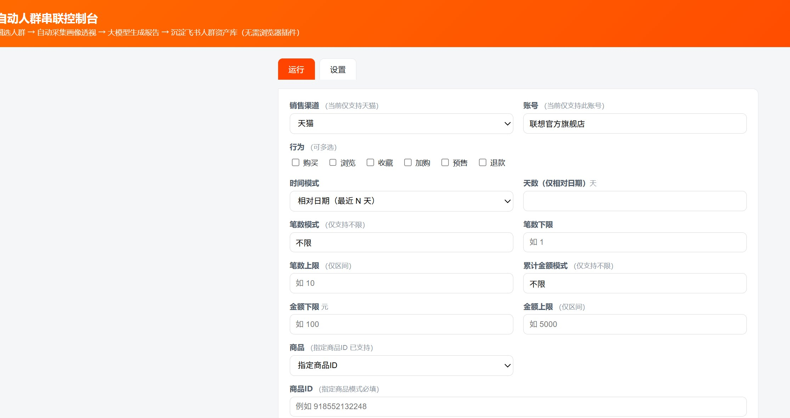
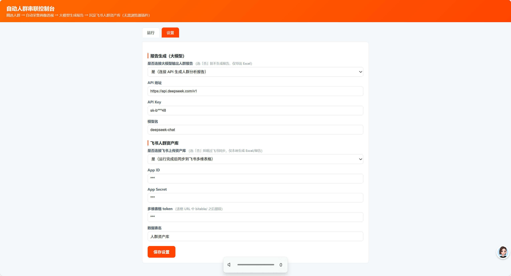

人群分层与圈人运营
天猫数据银行 · 联想官方旗舰店 · 2026
全链路一键闭环
9 类圈选条件
4 大画像模块
提效 90%+
无人值守批量
飞书资产沉淀
业务痛点：天猫数据银行是品牌方做人群运营的核心平台。每分析一个商品人群，运营都要在网页上走完「圈选人群 → 等计算 → 画像透视 → 手抄十余个图表 → 写报告 → 沉淀资产」十余步，强重复、必须人工值守，单人群耗时约 1 小时，人群一多根本做不过来，更谈不上批量。
我的动作：我主要用 Codex 和 CodeBuddy 辅助，把这条链路从纯手工一点点做成能自己跑的闭环，中间踩了不少坑，是分三个阶段迭代出来的：
V1
采集端
用 Playwright 驱动 Edge，把建人群、等计算、提数据这些重复操作先脚本化。
V2
插件
直接在页面里抓数据，再调大模型按模板出报告，顺手同步到飞书。
V3
闭环
把插件里的逻辑挪到本地代码，跟采集端接上，形成"采集、分析、沉淀到飞书、再自动去跑下一个人群"的自动循环，真正不用人在旁边守着。
几条经验：
- 页面跳转：系统不会自动回列表页，每步完都显式自动拉回去。
- 等计算：不写死等待时间，盯着状态轮询，好了再进下一步。
- 取数据：读页面上人眼能看到的字，不扒底层DOM，页面改版也不崩。
- 登录：登录态合规即可用，验证码滑块不触发。
项目界面

运行配置

系统设置
90%+
单人群分析提效
原约 1 小时 → 现 2 分钟
9 类圈选条件、4 大画像模块全部自动化；支持批量多人群、计算等待上限 12 小时且失败自动止损；自动同步飞书「人群资产库」；密钥与登录态由 .gitignore 排除，代码安全托管零泄露。
本页为独立作品展示，与整站简历分离 · 回到完整简历 ↗